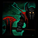
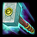
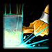
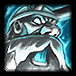
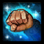

-
Habilidades

D: Second Wind
Restore 15.6 (+3.6 per level) Health per second when you have not taken damage for 4 seconds. When below 40% Health, increased to 31.2 (+7.2 per level) Health per second.
Q: Stormbolt
Cooldown: 10s
Throw a hammer, dealing 40 (+10 per level) damage to the first enemy unit hit and stunning it for 1.5 seconds. Has a 10 second cooldown.
W: Thunderclap
Cooldown: 8s
Deals 50 (+8 per level) damage in an area around Muradin and slows enemy units by 25% for 2.5 seconds. Has a 8 second cooldown.

E: Dwarf Toss
Cooldown: 12s
Leap to target location, dealing 35 (+5 per level) damage to enemies on landing.
R: Avatar
Cooldown: 100s
Transform for 20 seconds, gaining 416 (+96 per level) Health and causing your Basic Attacks to stun enemies.
R: Haymaker
Cooldown: 40s
Stun target enemy Hero, and wind up a punch dealing 320 (+20 per level) damage and knocking the target back, hitting enemies in the way for 80 (+5 per level) damage and knocking them aside.